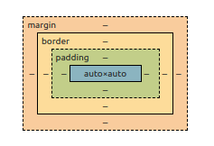

Modelos de caixa
Trata-se das características dimensionais, visuais e de posicionamento que constituem o layout dos elementos, são dimensões cujo posicionamento e relacionamento com as caixas(boxes) vizinhos dependem das propriedades de cada uma das caixas(boxes).
Temos dois tipos:
Block-level que são aqueles que geram caixas(boxes), fazendo com que o conteúdo fique em toda a linha:
A cor representa o espaço no qual um elemento de bloco ocupa, toda a linha.(sua altura foi alterada para que pudesse se tornar visivel sua ocupação horizontal
Inline-level são os que ficam mesclados em uma linha, não reagindo de modo a deixar apenas ele em uma linha:
Exemplo de um elemento inline: O elemento 'span'.
AS DIMENSÕES DAS CAIXAS(BOXES)
Representação das áreas do modelo de caixa:
A propriedade Margin define a espessura da distancia de um elemento para outro, ou de uma borda até o elemento;
css
p {
margin-top: 1px;
margin-right: 2px;
margin-bottom: 3px;
margin-left: 4px
}
Ou de forma abreviada, considerando que a ordem:
4 VALORES (top, right, bottom, left)
p {
margin: 1px 2px 3px 4px;
}
3 VALORES (top, left e right, bottom)
p {
margin: 2px 3px 2px
}
2 VALORES (top e bottom, left e right)
p {
margin: 2px 4px;
}
1 VALOR (define todos os lados ao mesmo valor)
p {
margin: 3px;
}
A propriedade padding define o "enchimento" a parte de dentro elemento, entre a borda e o conteúdo:
css
p {
padding-top: 1px;
padding-right: 2px;
padding-bottom: 3px;
padding-left: 4px
}
A forma abreviada segue as mesmas regras da propriedade Margin, as mesmas 4 formas de declarar.
A propriedade Border define a linha de contorno do elemento(borda), a sua cor, estilo e espessura:
css
ESPESSURA
p {
border-top-width: 1px;
border-right-width: 2px;
border-bottom-width: 3px;
border-left-width: 4px
}
ESTILO
p {
border-top-style: solid;
border-right-style: dotted;
border-bottom-style: dashed;
border-left-style: double;
}
COR
p {
border-top-color: red;
border-right-color: blue;
border-bottom-color: green;
border-left-color: yellow;
}
A forma abreviada segue as mesmas regras da propriedade Margin, as mesmas 4 formas de declarar.
E uma outra forma de declaração chamada shorthand, para declarar as três opções em uma unida linha:
p {
border: 1px solid red;
}